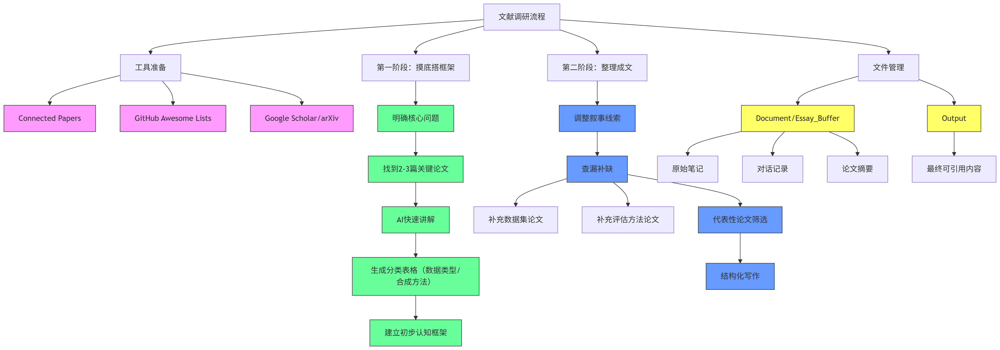

How to do survey
文献调研流程复盘¶
总结一下这次的综述调研具体流程和想法。

一、 用到的工具
主要就是几个网站，每个都有明确用途：
Connected Papers: 当找到一篇关键论文时，用它来看这张论文的“关系网”，能很快发现一批高度相关的其他论文。GitHub Awesome Lists: 有时候想找某个领域的资源汇总，就去GitHub搜“awesome-[领域名]”，经常能找到好东西。Google Scholar/arXiv: 用来精确查找和下载已知的论文。
二、 具体的工作步骤
整个过程可以分成两个阶段。
第一阶段：摸底和搭框架
- 想清楚问题：最开始，先明确这次调研到底要解决什么问题。比如这次，就是“现在大家是怎么用大模型生成文档的？”
- 找到关键论文：基于这个问题，找到了两三篇绕不开的核心论文。这几篇论文就是调研的起点。
- 让AI快速讲解：把这几篇论文丢给AI，让它快速讲讲每篇的核心思想、用了什么方法。然后让它帮忙简单分个类，比如按“数据类型、合成方法”做成表格。做完这步，对这个领域就有了一个大概的认知框架。
第二阶段：整理思路，写成文稿
- 调整思路：一开始的表格虽然清楚，但看起来很零散，讲不出一个完整的故事。所以决定换个思路，不再是简单罗列，而是要梳理出一条技术发展的线索。
- 查漏补缺：有了新的叙事线索后，就发现原来的几篇论文不够了。比如，除了讲核心方法的论文，还需要讲数据集的、讲评估方法的论文来让故事更完整。这时就带着明确的目标去找这些缺失的环节。这次我提供了很多新的论文信息，就是在这个阶段。
- 整理成文：材料都齐了，就开始整理最终的文字。从所有找到的论文里，挑出最有代表性的几篇，确保它们能串起整个故事，并且互相不重复。然后让AI把这些内容和引用信息，按照定好的格式写出来。
三、 文件整理习惯
为了不乱，文件分了几个地方放：
- 一个叫
Document或Essay_Buffer的文件，专门放所有原始的笔记、对话记录和各种论文摘要，是个草稿区。 - 一个
Output文件，只放最后整理好的、可以直接复制粘贴到最终文稿里的内容。